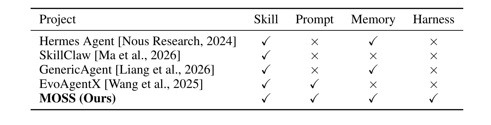
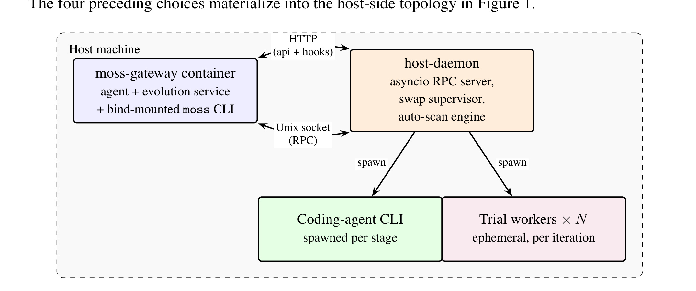
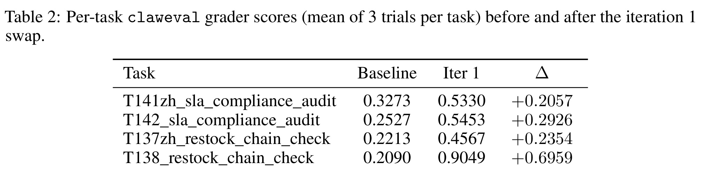

这里精读一篇 2026-05-21 submitted 公开的论文《MOSS: Self-Evolution through Source-Level Rewriting in Autonomous Agent Systems》。中文可译为《MOSS：通过源码级改写实现自主 Agent 系统自演化》。论文链接：arXiv:2605.22794。作者为 Qianshu Cai, Yonggang Zhang, Xianzhang Jia, Wei Xue, Jun Song, Xinmei Tian, Yike Guo；机构/团队记录为 University of Science and Technology of China；The Hong Kong University of Science and Technology；Hong Kong Baptist University。代码/项目页状态：PDF 声称代码位于 https://github.com/dav-joy-thon/MOSS；本轮访问返回 404，按不可用处理。
1. 背景和问题
部署后的 Agent 系统会反复遇到失败，但大多数自演化机制只改文本层：技能文件、prompt、memory schema、workflow graph。问题是很多故障发生在 harness 层：路由、hook 顺序、session 生命周期、并发状态、工具调度、原子性。prompt 再怎么改，也不能修复一个调度器 bug。MOSS 的核心问题是：能否让 agent 在受控验证下修改自己的源码，从而触达 text-mutable artifacts 覆盖不到的结构性故障。

Table 1 是论文立论的关键。已有 self-evolving agent 多数能改 skill、prompt 或 memory，但不能改 harness。MOSS 把 harness 列入可演化范围，意味着路由、hooks、session state、dispatch 等结构性缺陷理论上可以被修复。这个表也提醒我们，自演化不是“让模型写更好提示词”，而是要明确系统哪些层允许改变。
这篇论文放在今天的调研里，主要因为它把一个热门概念落到了具体链路。多数 self-evolving agent 只能改 prompt、skill 或 memory；MOSS 把可变范围推进到 harness/source code，并配套 trial worker、health probe、rollback 和 user consent。这对真实 Agent 运维很关键。 如果只看标题，很容易把它理解成又一篇泛泛使用 LLM 或推荐系统的工作；但从原文的任务设定、图表和实验看，它真正关心的是系统中哪一个环节最脆弱、哪一个中间表示最需要被重新设计。对工程读者来说，先厘清这个问题，比记住模型名更重要。
2. 方法
MOSS 把演化生命周期显式化为 moss evo CLI，并把系统拆成 gateway container、host-daemon、coding-agent CLI 和 trial workers。host-daemon 负责 RPC、swap supervisor、auto-scan 和 ephemeral trial worker 编排；coding-agent CLI 只负责候选代码修改；MOSS 自己保留 stage order、review gates、verdict 和 promotion 逻辑。每次演化从生产失败证据 batch 出发，经过 locate、plan、review、implement、build、task-evaluate、verdict 等固定阶段；候选 image 在 trial workers 中回放失败样本，通过后才由 user-consent gate 和 health-probe-gated rollback 控制上线。

Figure 1 展示 host-side topology。gateway container 保持用户可见 agent 与演化服务；host-daemon 负责 RPC、trial worker、swap supervisor；coding-agent CLI 被当成可替换的实现工具。这个结构的价值在于把“会改代码”的能力放进一个受控外壳中，而不是让模型直接接触生产环境。
方法上可以把它拆成三层理解。第一层是输入输出边界：模型或系统到底读什么、产出什么、产物是否能直接进入下游链路。第二层是训练或优化信号：论文使用的是监督、强化、合成标签、结构约束还是运行时验证。第三层是部署边界：高成本模块是否在线、是否可缓存、是否有回滚与审计、是否会影响已有召回/排序/推理服务。沿这三层看，论文的贡献就不会只停留在“用了 LLM”或“加了一个模块”。
对比已有方法，本文的共同特点是把自由度收窄到可验证形式。Airbnb 把 LLM 合成限制在 listing pair 和 seed language 上；GCRS/ThinkGR 把生成约束到 semantic ID 或 docid；VPO 把多样性定义到 reward vector；Gated DeltaNet-2 把长期记忆压进可训练的 erase/write state update；MOSS 则把源码改写放进 trial worker 和 verdict pipeline。这样的设计比完全开放的生成更不浪漫，但更接近可落地系统。
3. 实验结果
论文在 OpenClaw 上展示一轮 self-rewriting。Table 2 报告四个任务三次 trial 的 grader score：baseline 平均约 0.25，iteration 1 后平均约 0.61，四个任务均有提升。Figure 3 展示 stage trace，说明系统不是直接让模型改代码然后上线，而是分阶段定位、构建、回放和 verdict。这个实验规模不大，但它验证的是系统闭环：失败证据如何转成候选改动，候选如何被隔离验证，验证通过后如何替换运行中系统。

Table 2 报告四个 OpenClaw 任务在一轮 self-rewriting 前后的 grader score。四项均提升，平均从约 0.25 到约 0.61。需要谨慎的是，样本数较小且仍是同一任务族；但它至少说明 MOSS 的 failure batch、candidate image、trial replay 和 promotion pipeline 能形成完整闭环。
实验解读时我更关注三个问题。第一，指标是否和论文主张一致：例如冷启动搜索不能只看生成文本质量，必须看检索/排序样本是否有区分度；后训练多样性不能只看单次 pass@1，还要看 best@k。第二，消融是否真的切中了核心机制：去掉 seed、去掉 structured generation、去掉 hybrid decoding、合并 erase/write gate 或删除验证回放，应该能解释主要退化。第三，实验是否给出工程成本信号：延迟、token cost、吞吐、代码可用性、线上部署形态或回滚机制，决定它能否从论文进入系统。
这篇论文的证据整体是有价值的，但不能过度外推。公开 benchmark、预印本实验和工业摘要都只能证明某个受控条件下的收益；真实推荐/搜索/Agent/LLM serving 系统还会受到流量分布、库存变化、硬件、权限、隐私、灰度策略和监控口径影响。因此这份笔记把实验当作“方向证据”，不把它写成确定性工程结论。
4. 总结
对 Agent 工程，它强调自演化必须和 CI、沙箱、回放、回滚、权限边界一起设计，否则“会改自己”只是风险。对推荐/LLM 自动化流水线，它提示长期任务系统的问题往往在调度与状态层，单靠 prompt 迭代不能解决。
4.1 我的判断
我认为这篇论文最值得保留的不是单个指标，而是它对系统边界的处理。它没有把所有问题都交给一个更大的模型，而是明确哪些信号要生成、哪些信号要约束、哪些信号要留给下游检索/排序/验证/推理框架。这个思路对于后续做推荐系统和大模型交叉非常重要：LLM 的能力要变成系统收益，必须经过候选空间、约束解码、reward、缓存、回放或人审这些接口。
4.2 工程启发与复现建议
第一，复现时不要从完整系统开始，应先复现最小闭环：输入、约束、指标和一个可替换 baseline。第二，所有生成中间产物都要保留可追溯来源，尤其是合成 query、CoT、semantic ID、docid、reward vector 或自改写 patch。第三，线上前要设置反事实检查：去掉 LLM 信号、打乱中间表示、降低刷新频率或替换 reward，看指标是否仍然成立。第四，要把成本作为一等指标，包含 token、GPU、延迟、工程复杂度和出错后的回滚成本。
4.3 局限与后续跟进
局限主要有四点：GitHub 链接本轮访问 404，外部无法核验源码和复现实验。；OpenClaw 四任务规模较小，且同一 failure batch 回放可能高估泛化。；源码级自改写风险高，权限、审计、供应链安全和回滚策略必须强约束。；用户同意 gate 和 health probe 的具体策略很关键，论文公开细节仍有限。。这些局限并不否定论文价值，但决定了它适合先作为研究原型或局部链路增强，而不是直接替换既有生产系统。
后续跟进建议：跟踪代码仓库是否恢复可访问。；检查 MOSS 是否能处理真实多用户并发、长期 drift 和跨版本 schema 迁移。；把失败回放思想迁移到自动化日报/训练流水线，优先修 harness 层缺陷。。本轮自动化已经下载 PDF、裁剪关键图表并生成本地笔记；如果本笔记字符数低于 10000，是因为本轮只保留了已在 PDF、arXiv 页面或可访问链接中核验的事实，没有为满足字数硬补未核验实现细节。